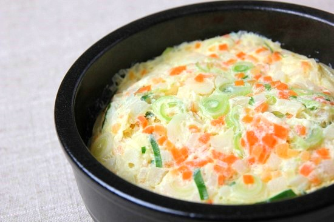

5분 요리
* 스팸마요덮밥

오늘의 밥도둑 스팸마요덮밥!
엄청 간단하지만 맛있는 스팸마요덮밥 같이 만들어봐요~
재료 : 스팸, 양파, 계란, 마요네즈
<과정>
1. 양파를 썰어줍니다.
2. 스팸을 작은 깍두기 크기로 썰어줍니다.
3. 계란을 그릇에 깬 후, 소금과 설탕을 조금씩 넣고 풀어줍니다.
4. 가스레인지에 후라이팬을 올리고 식용유를 둘러준 후 계란을 먼저 익힙니다.
5. 그리고 썰어둔 스팸을 볶아줍니다.
6. 스팸을 다 볶은 후 양파를 볶아줍니다.
7. 양파가 어느정도 볶아지면 진간장 한스푼, 설탕 반스푼을 넣고 볶아줍니다.
8. 밥에 스크럼블에그, 볶은양파, 스팸을 잘 플레이팅해줍니다.
간단하고 맛있는 스팸마요덮밥 완성!
* 계란찜

부드럽고 맛있는 계란찜! 간단한 재료와 손이 많이 가지 않아요~?
재료 : 계란3개, 당근, 대파, 참기름
<과정>
1 그릇에 계란을 깨고 잘 풀어줍니다.
2. 그릇에 계란과 같은 양의 물을 넣고 소금1/3스푼, 설탕 반스푼, 참기름 반스푼을 넣고 잘 저어줍니다.
3. 당근과 대파를 잘게 썰어줍니다.
4. 계란이 담긴 그릇에 잘게 썰은 당근과 파를 넣어줍니다.
5. 가스레인지에 냄비를 올리고 물을 적당히 넣어둔 뒤에 계란물이담긴 그릇을 냄비에 넣습니다.
6, 물이 끓기 시작하면 뚜껑을 닫고 약불에서 20분 익힙니다.
부드럽고 맛있는 계란찜 완성!
* 콘치즈

간식으로 안성맞춤 콘치즈!
간단하고 맛있는 간식거리 같이 만들어봅시다!
재료 : 옥수수콘, 모짜렐라 치즈, 마요네즈, 설탕, 소금
<과정>
1. 옥수수콘의 물기를 빼줍니다.
2. 옥수수콘에 소금 조금, 설탕1/2스푼, 마요네즈는 취향껏 넣어주고 잘 섞어줍니다.
3. 후라이팬에 옥수수콘을 먼저 깔아준 다음 모짜렐라 치즈를 위에 덮어줍니다.
4. 약불에서 치즈를 녹여줍니다.
맛있고 달달한 콘치즈 완성!